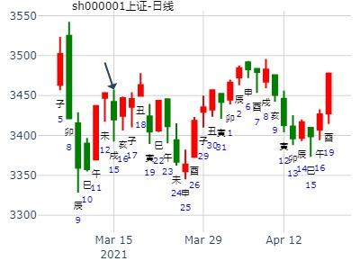

主帖标题: 浅谈1.27日大盘走势
2011年 1月 26日 15时 0分 (起卦方式：手动指定)
干支：庚寅年 己丑月 辛巳日 丙申时 日空亡：申酉
神煞：驿马－亥 桃花－午 日禄－酉 贵人－寅，午
坎宫：地水师 (归魂) 坤宫：坤为地 (六冲)
螣蛇 父母酉金 ▅▅ ▅▅ 应 父母酉金 ▅▅ ▅▅ 世
勾陈 兄弟亥水 ▅▅ ▅▅ 兄弟亥水 ▅▅ ▅▅
朱雀 官鬼丑土 ▅▅ ▅▅ 官鬼丑土 ▅▅ ▅▅
青龙 妻财午火 ▅▅ ▅▅ 世 子孙卯木 ▅▅ ▅▅ 应
玄武 官鬼辰土 ▅▅▅▅▅ ○→ 妻财巳火 ▅▅ ▅▅
白虎 子孙寅木 ▅▅ ▅▅ 官鬼未土 ▅▅ ▅▅
主帖标题: T-Z-G-D上证指数擂台赛第四场第3局（2020年1月15日）Z方
Z 方
公历起卦时间：2020年1月15日9时2分 (手工指定)
干支：己亥年 丁丑月 丁巳日 乙巳时 （日空：子丑）
神煞：驿马－亥 桃花－午 日禄－午 贵人－酉，亥
坎宫：地水师 (归魂) 坤宫：坤为地 (六冲)
六神 伏神 本 卦 变 卦
青龙 父母癸酉金 ▅▅ ▅▅ 应 父母癸酉金 ▅▅ ▅▅ 世
玄武 兄弟癸亥水 ▅▅ ▅▅ 兄弟癸亥水 ▅▅ ▅▅
白虎 官鬼癸丑土 ▅▅ ▅▅ 官鬼癸丑土 ▅▅ ▅▅
腾蛇 妻财戊午火 ▅▅ ▅▅ 世 子孙乙卯木 ▅▅ ▅▅ 应
勾陈 官鬼戊辰土 ▅▅▅▅▅ ○→ 妻财乙巳火 ▅▅ ▅▅
朱雀 子孙戊寅木 ▅▅ ▅▅ 官鬼乙未土 ▅▅ ▅▅
主帖标题: 下周股票涨跌卦，放在一起吧。
公历时间：2020年1月19日19时45分
干 支：己亥年 丁丑月 辛酉日 戊戌时
旬 空：辰巳 申酉 子丑 辰巳
坎宫：地水师（归魂） 坤宫：坤为地（六冲）
六神 【本 卦】 【变 卦】
螣蛇 ▄▄ ▄▄ 父母癸酉金 应 ▄▄ ▄▄ 父母癸酉金 世
勾陈 ▄▄ ▄▄ 兄弟癸亥水 ▄▄ ▄▄ 兄弟癸亥水
朱雀 ▄▄ ▄▄ 官鬼癸丑土 ▄▄ ▄▄ 官鬼癸丑土
青龙 ▄▄ ▄▄ 妻财戊午火 世 ▄▄ ▄▄ 子孙乙卯木 应
玄武 ▄▄▄▄▄ 官鬼戊辰土 ○ ▄▄ ▄▄ 妻财乙巳火
白虎 ▄▄ ▄▄ 子孙戊寅木 ▄▄ ▄▄ 官鬼乙未土

主帖标题: 2021年上证走牛第一波接近尾声，主力资金将转战
公历起卦时间：2021年1月8日21时3分 (手工指定)
干支：庚子年 己丑月 丙辰日 己亥时 （日空：子丑）
神煞：驿马－寅 桃花－酉 日禄－巳 贵人－酉，亥
坎宫：地水师 (归魂) 坤宫：坤为地 (六冲)
六神 伏神 本 卦 变 卦
青龙 父母癸酉金 ▅▅ ▅▅ 应 父母癸酉金 ▅▅ ▅▅ 世
玄武 兄弟癸亥水 ▅▅ ▅▅ 兄弟癸亥水 ▅▅ ▅▅
白虎 官鬼癸丑土 ▅▅ ▅▅ 官鬼癸丑土 ▅▅ ▅▅
螣蛇 妻财戊午火 ▅▅ ▅▅ 世 子孙乙卯木 ▅▅ ▅▅ 应
勾陈 官鬼戊辰土 ▅▅▅▅▅ ○→ 妻财乙巳火 ▅▅ ▅▅
朱雀 子孙戊寅木 ▅▅ ▅▅ 官鬼乙未土 ▅▅ ▅▅
下周上证指数涨跌？
时间: 2025-01-03 17时18分
干支: 甲辰年丙子月壬申日 (旬空: 戌亥 )
地水师(归魂) 坤为地
六神 伏神 本 卦 变 卦
白虎 ▅▅ ▅▅ 父母酉金 应 ▅▅ ▅▅ 父母酉金 世
腾蛇 ▅▅ ▅▅ 兄弟亥水 ▅▅ ▅▅ 兄弟亥水
勾陈 ▅▅ ▅▅ 官鬼丑土 ▅▅ ▅▅ 官鬼丑土
朱雀 ▅▅ ▅▅ 妻财午火 世 ▅▅ ▅▅ 子孙卯木 应
青龙 ▅▅▅▅▅ 官鬼辰土 Ｏ→ ▅▅ ▅▅ 妻财巳火
玄武 ▅▅ ▅▅ 子孙寅木 ▅▅ ▅▅ 官鬼未土
主帖标题: 浅谈2.21日大盘走势
2011年 2月 18日 15时 0分 (起卦方式：手动指定)
干支：辛卯年 庚寅月 甲辰日 壬申时 日空亡：寅卯
神煞：驿马－寅 桃花－酉 日禄－寅 贵人－丑，未
坎宫：地水师 (归魂) 坤宫：坤为地 (六冲)
玄武 父母酉金 ▅▅ ▅▅ 应 父母酉金 ▅▅ ▅▅ 世
白虎 兄弟亥水 ▅▅ ▅▅ 兄弟亥水 ▅▅ ▅▅
螣蛇 官鬼丑土 ▅▅ ▅▅ 官鬼丑土 ▅▅ ▅▅
勾陈 妻财午火 ▅▅ ▅▅ 世 子孙卯木 ▅▅ ▅▅ 应
朱雀 官鬼辰土 ▅▅▅▅▅ ○→ 妻财巳火 ▅▅ ▅▅
青龙 子孙寅木 ▅▅ ▅▅ 官鬼未土 ▅▅ ▅▅
601990未来2周
时间: 2019-02-09
干支: 己亥年丙寅月丁丑日 (旬空: 申酉 )
地水师(归魂) 坤为地
青龙 ▅▅ ▅▅ 父母酉金 应 ▅▅ ▅▅ 父母酉金 世
玄武 ▅▅ ▅▅ 兄弟亥水 ▅▅ ▅▅ 兄弟亥水
白虎 ▅▅ ▅▅ 官鬼丑土 ▅▅ ▅▅ 官鬼丑土
腾蛇 ▅▅ ▅▅ 妻财午火 世 ▅▅ ▅▅ 子孙卯木 应
勾陈 ▅▅▅▅▅ 官鬼辰土 Ｏ→ ▅▅ ▅▅ 妻财巳火
朱雀 ▅▅ ▅▅ 子孙寅木 ▅▅ ▅▅ 官鬼未土
寅月丑日则大涨，寅巳午三天大涨。
主帖标题: T-Z-D-M上证指数擂台赛第九场第1局（2020年3月2日）T方
起卦公历：2020年2月28日11时48分(北京时间)
干支： 庚子年 戊寅月 辛丑日 甲午时 (卦身：申)辰
主变卦 地水师(坎宫-归魂) 之 坤为地(坤宫) [空亡:辰、巳]
螣蛇 ━ ━ 父母酉金 应 ━ ━ 父母酉金 世
勾陈 ━ ━ 兄弟亥水 ━ ━ 兄弟亥水
朱雀 ━ ━ 官鬼丑土 ━ ━ 官鬼丑土
青龙 ━ ━ 妻财午火 世 ━ ━ 子孙卯木 应
玄武 ━━━ ○官鬼辰土 ━ ━ 妻财巳火
白虎 ━ ━ 子孙寅木 ━ ━ 官鬼未土
◇九二:在师中，吉，无咎。王三锡命。 象曰：在师中吉，承天宠也。 王三锡命，怀万邦也。
王三锡命，怀万邦，国家多次下令救市。
断，涨。
测3月10至14日中小板
占事：中小板
起卦方式：手工指定 易经股市论坛
公历时间：2014年3月7日20时18分
干支：甲午年 丁卯月 丁丑日 庚戌时 旬空：辰巳 戌亥 (申酉) 寅卯
坎宫：地水师（归魂） 坤宫：坤为地（六冲）
青龙 ▄▄ ▄▄ 父母癸酉金 应 ▄▄ ▄▄ 父母癸酉金 世
玄武 ▄▄ ▄▄ 兄弟癸亥水 ▄▄ ▄▄ 兄弟癸亥水
白虎 ▄▄ ▄▄ 官鬼癸丑土 ▄▄ ▄▄ 官鬼癸丑土
螣蛇 ▄▄ ▄▄ 妻财戊午火 世 ▄▄ ▄▄ 子孙乙卯木 应
勾陈 ▄▄▄▄▄ 官鬼戊辰土 O- ▄▄ ▄▄ 妻财乙巳火
朱雀 ▄▄ ▄▄ 子孙戊寅木 ▄▄ ▄▄ 官鬼乙未土
601989中国重工明天到下周五走势。师之坤。官化财。.md
时间: 2015-03-26 21时41分
干支: 乙未年己卯月辛丑日 (旬空: 辰巳 )
地水师(归魂) 坤为地
六神 伏神 本 卦 变 卦
腾蛇 ▅▅ ▅▅ 父母酉金 应 ▅▅ ▅▅ 父母酉金 世
勾陈 ▅▅ ▅▅ 兄弟亥水 ▅▅ ▅▅ 兄弟亥水
朱雀 ▅▅ ▅▅ 官鬼丑土 ▅▅ ▅▅ 官鬼丑土
青龙 ▅▅ ▅▅ 妻财午火 世 ▅▅ ▅▅ 子孙卯木 应
玄武 ▅▅▅▅▅ 官鬼辰土 Ｏ→ ▅▅ ▅▅ 妻财巳火
白虎 ▅▅ ▅▅ 子孙寅木 ▅▅ ▅▅ 官鬼未土
短线横盘横住，中线却大涨。
男 占事：002167东方锆业明天涨跌
公历起卦时间：2016年3月9日16时6分 (电脑自动)
干支：丙申年 辛卯月 庚寅日 甲申时 （日空：午未）
坎宫：地水师 (归魂) 坤宫：坤为地 (六冲)
六神 伏神 本 卦 变 卦
腾蛇 父母癸酉金 ▅▅ ▅▅ 应 父母癸酉金 ▅▅ ▅▅ 世
勾陈 兄弟癸亥水 ▅▅ ▅▅ 兄弟癸亥水 ▅▅ ▅▅
朱雀 官鬼癸丑土 ▅▅ ▅▅ 官鬼癸丑土 ▅▅ ▅▅
青龙 妻财戊午火 ▅▅ ▅▅ 世 子孙乙卯木 ▅▅ ▅▅ 应
玄武 官鬼戊辰土 ▅▅▅▅▅ ○→ 妻财乙巳火 ▅▅ ▅▅
白虎 子孙戊寅木 ▅▅ ▅▅ 官鬼乙未土 ▅▅ ▅▅
主帖标题: 2016丙申年上证指数每天预测实战探索（每天在回复中更新）
公历：2016年3月29日9时30分，星期二。
干支：丙申年 辛卯月 庚戌日 辛巳时 (卦身：寅)
主变卦 地水师(坎宫-归魂) 之 坤为地(坤宫) [空亡:寅、卯]
螣蛇 ▅▅ ▅▅ 父母癸酉金 应 ▅▅ ▅▅ 父母癸酉金 世
勾陈 ▅▅ ▅▅ 兄弟癸亥水 ▅▅ ▅▅ 兄弟癸亥水
朱雀 ▅▅ ▅▅ 官鬼癸丑土 ▅▅ ▅▅ 官鬼癸丑土
青龙 ▅▅ ▅▅ 妻财戊午火 世 ▅▅ ▅▅ 子孙乙卯木 应
玄武 ▅▅▅▅▅○官鬼戊辰土 ▅▅ ▅▅ 妻财乙巳火
白虎 ▅▅ ▅▅ 子孙戊寅木 ▅▅ ▅▅ 官鬼乙未土
主帖标题: 吉祥如意-每日大盘卦！
求测内容：明天大盘走势？
公历：2020年03月02日17时04分
四柱：庚子年 戊寅月 甲辰日 癸酉时 (日空：寅卯)
卦名：坎宫3世归魂卦：地水师 之 坤宫6世六冲卦：坤为地
玄武 ▅ ▅ 父母癸酉金 应 ▅ ▅ 父母癸酉金 世
白虎 ▅ ▅ 兄弟癸亥水 ▅ ▅ 兄弟癸亥水
螣蛇 ▅ ▅ 官鬼癸丑土 ▅ ▅ 官鬼癸丑土
勾陈 ▅ ▅ 妻财戊午火 世 ▅ ▅ 子孙乙卯木 应
朱雀 ▅▅▅ 官鬼戊辰土 ○→ ▅ ▅ 妻财乙巳火
青龙 ▅ ▅ 子孙戊寅木 ▅ ▅ 官鬼乙未土
巳日，财爻午火当旺，看涨。财爻泄火之力，涨幅减半。

主帖标题: T-Z-D-M上证指数擂台赛第九场第2局（2020年3月3日）T方
凑个热闹测内容：明天大盘走势？ 起卦方式：双数起卦
公历：2020年03月02日17时04分
四柱：庚子年 戊寅月 甲辰日 癸酉时 (日空：寅卯)
地水师 之 坤为地
玄武 ▅ ▅ 父母癸酉金 应 ▅ ▅ 父母癸酉金 世
白虎 ▅ ▅ 兄弟癸亥水 ▅ ▅ 兄弟癸亥水
螣蛇 ▅ ▅ 官鬼癸丑土 ▅ ▅ 官鬼癸丑土
勾陈 ▅ ▅ 妻财戊午火 世 ▅ ▅ 子孙乙卯木 应
朱雀 ▅▅▅ 官鬼戊辰土 ○→ ▅ ▅ 妻财乙巳火
青龙 ▅ ▅ 子孙戊寅木 ▅ ▅ 官鬼乙未土
巳日，财爻午火当旺，看涨。财爻泄火之力，涨幅减半。
主帖标题: 3.23上证
公历起卦时间：2020年3月22日10时39分 (按农历时间起卦)
干支：庚子年 己卯月 甲子日 己巳时 （日空：戌亥）
神煞：驿马－寅 桃花－酉 日禄－寅 贵人－丑，未
坎宫：地水师 (归魂) 坤宫：坤为地 (六冲)
玄武 父母癸酉金 ▅▅ ▅▅ 应 父母癸酉金 ▅▅ ▅▅ 世
白虎 兄弟癸亥水 ▅▅ ▅▅ 兄弟癸亥水 ▅▅ ▅▅
螣蛇 官鬼癸丑土 ▅▅ ▅▅ 官鬼癸丑土 ▅▅ ▅▅
勾陈 妻财戊午火 ▅▅ ▅▅ 世 子孙乙卯木 ▅▅ ▅▅ 应
朱雀 官鬼戊辰土 ▅▅▅▅▅ ○→ 妻财乙巳火 ▅▅ ▅▅
青龙 子孙戊寅木 ▅▅ ▅▅ 官鬼乙未土 ▅▅ ▅▅
主帖标题: 3.15上证收盘十位数
7
排卦：元亨利贞网六爻在线排盘系统 https://www.china95.net
公历起卦时间：2021年3月15日8时12分 (电脑自动)
干支：辛丑年 辛卯月 壬戌日 甲辰时 （日空：子丑）
神煞：驿马－申 桃花－卯 日禄－亥 贵人－卯，巳
坎宫：地水师 (归魂) 坤宫：坤为地 (六冲)
六神 伏神 本 卦 变 卦
白虎 父母癸酉金 ▅▅ ▅▅ 应 父母癸酉金 ▅▅ ▅▅ 世
螣蛇 兄弟癸亥水 ▅▅ ▅▅ 兄弟癸亥水 ▅▅ ▅▅
勾陈 官鬼癸丑土 ▅▅ ▅▅ 官鬼癸丑土 ▅▅ ▅▅
朱雀 妻财戊午火 ▅▅ ▅▅ 世 子孙乙卯木 ▅▅ ▅▅ 应
青龙 官鬼戊辰土 ▅▅▅▅▅ ○→ 妻财乙巳火 ▅▅ ▅▅
玄武 子孙戊寅木 ▅▅ ▅▅ 官鬼乙未土 ▅▅ ▅▅

主帖标题: [原创]4月5日上海大盘走势预测
公历时间：2007年4月5日9时30分 星期四
干支：丁亥年 癸卯月 己巳日 己巳时 (旬空：戌亥)
神煞：驿马—亥 桃花—午 日禄—午 贵人—子，申特别提示您：今天12时27分交清明节
坎宫：地水师（归魂） 坤宫：坤为地（六冲）
勾陈 ▅▅ ▅▅ 父母癸酉金 应 ▅▅ ▅▅ 父母癸酉金 世
朱雀 ▅▅ ▅▅ 兄弟癸亥水 ▅▅ ▅▅ 兄弟癸亥水
青龙 ▅▅ ▅▅ 官鬼癸丑土 ▅▅ ▅▅ 官鬼癸丑土
玄武 ▅▅ ▅▅ 妻财戊午火 世 ▅▅ ▅▅ 子孙乙卯木 应
白虎 ▅▅▅▅▅ 官鬼戊辰土 ○→ ▅▅ ▅▅ 妻财乙巳火
螣蛇 ▅▅ ▅▅ 子孙戊寅木 ▅▅ ▅▅ 官鬼乙未土
上午，仍旧上涨，但是幅度有限，后面出现长时间横盘；
公历时间：2007年4月5日13时31分 星期四
干支：丁亥年 甲辰月 己巳日 辛未时 (旬空：戌亥)
神煞：驿马—亥 桃花—午 日禄—午 贵人—子，申特别提示您：今天12时27分交清明节
乾宫：乾为天（六冲） 乾宫：火天大有（归魂）
六神 【本 卦】 【变 卦】
勾陈 ▅▅▅▅▅ 父母壬戌土 世 ▅▅▅▅▅ 官鬼己巳火 应
朱雀 ▅▅▅▅▅ 兄弟壬申金 ○→ ▅▅ ▅▅ 父母己未土
青龙 ▅▅▅▅▅ 官鬼壬午火 ▅▅▅▅▅ 兄弟己酉金
玄武 ▅▅▅▅▅ 父母甲辰土 应 ▅▅▅▅▅ 父母甲辰土 世
白虎 ▅▅▅▅▅ 妻财甲寅木 ▅▅▅▅▅ 妻财甲寅木
螣蛇 ▅▅▅▅▅ 子孙甲子水 ▅▅▅▅▅ 子孙甲子水
兄弟动而被日合去；有比较缠绵的下跌情况；下午形式差一些；会处于下跌的曲线；全天整体来看，是小幅度上涨！
000887中鼎股份近期走势
占事：中鼎股份走势
起卦方式：报数起卦 (8,6) 动爻加时辰
公历时间：2010年4月19日21时43分
干 支：庚寅年 庚辰月 己亥日 乙亥时
旬 空：午未 申酉 (辰巳) 申酉
坎宫：地水师（归魂） 坤宫：坤为地（六冲）
[b]六神 【本 卦】 【变 卦】[/b]
勾陈 ▄▄ ▄▄ 父母癸酉金 应 ▄▄ ▄▄ 父母癸酉金 世
朱雀 ▄▄ ▄▄ 兄弟癸亥水 ▄▄ ▄▄ 兄弟癸亥水
青龙 ▄▄ ▄▄ 官鬼癸丑土 ▄▄ ▄▄ 官鬼癸丑土
玄武 ▄▄ ▄▄ 妻财戊午火 世 ▄▄ ▄▄ 子孙乙卯木 应
白虎 ▄▄▄▄▄ 官鬼戊辰土 O-> ▄▄ ▄▄ 妻财乙巳火
螣蛇 ▄▄ ▄▄ 子孙戊寅木 ▄▄ ▄▄ 官鬼乙未土
出生：2021 年 性别：男 占事：上证4.9丁亥五-4.16甲午五哪日顶？
排卦：元亨利贞网六爻在线排盘系统 https://www.china95.net
公历起卦时间：2021年4月13日8时9分 (电脑自动)
干支：辛丑年 壬辰月 辛卯日 壬辰时 （日空：午未）
神煞：驿马－巳 桃花－子 日禄－酉 贵人－寅，午
坎宫：地水师 (归魂) 坤宫：坤为地 (六冲)
螣蛇 父母癸酉金 ▅▅ ▅▅ 应 父母癸酉金 ▅▅ ▅▅ 世
勾陈 兄弟癸亥水 ▅▅ ▅▅ 兄弟癸亥水 ▅▅ ▅▅
朱雀 官鬼癸丑土 ▅▅ ▅▅ 官鬼癸丑土 ▅▅ ▅▅
青龙 妻财戊午火 ▅▅ ▅▅ 世 子孙乙卯木 ▅▅ ▅▅ 应
玄武 官鬼戊辰土 ▅▅▅▅▅ ○→ 妻财乙巳火 ▅▅ ▅▅
白虎 子孙戊寅木 ▅▅ ▅▅ 官鬼乙未土 ▅▅ ▅▅
师之坤，官化财。辰化巳。8.12山东如意？
姓名： 男 占事：8.12山东如意 5
起卦方式：手动摇卦 易经股市论坛 www.yijingstock.com 在线排盘系统
公历时间：2014年5月7日20时39分
干 支：甲午年 己巳月 戊寅日 壬戌时
旬 空：辰巳 戌亥 (申酉) 子丑
坎宫：地水师（归魂） 坤宫：坤为地（六冲）
朱雀 ▄▄ ▄▄ 父母癸酉金 应 ▄▄ ▄▄ 父母癸酉金 世
青龙 ▄▄ ▄▄ 兄弟癸亥水 ▄▄ ▄▄ 兄弟癸亥水
玄武 ▄▄ ▄▄ 官鬼癸丑土 ▄▄ ▄▄ 官鬼癸丑土
白虎 ▄▄ ▄▄ 妻财戊午火 世 ▄▄ ▄▄ 子孙乙卯木 应
螣蛇 ▄▄▄▄▄ 官鬼戊辰土 O-> ▄▄ ▄▄ 妻财乙巳火
勾陈 ▄▄ ▄▄ 子孙戊寅木 ▄▄ ▄▄ 官鬼乙未土
九二：在师中，吉无咎，王三锡命。
象曰：在师中吉，承天宠也。 王三锡命，怀万邦也。
注：此卦钥语奇怪，配图仅供参考。
主帖标题: 5月24日沪市
公历时间：2016年5月23日16时0分
干 支：丙申年 癸巳月 乙巳日 甲申时
旬 空：辰巳 午未 (寅卯) 午未
坎宫：地水师（归魂） 坤宫：坤为地（六冲）
玄武 ▄▄ ▄▄ 父母癸酉金 应 ▄▄ ▄▄ 父母癸酉金 世
白虎 ▄▄ ▄▄ 兄弟癸亥水 ▄▄ ▄▄ 兄弟癸亥水
螣蛇 ▄▄ ▄▄ 官鬼癸丑土 ▄▄ ▄▄ 官鬼癸丑土
勾陈 ▄▄ ▄▄ 妻财戊午火 世 ▄▄ ▄▄ 子孙乙卯木 应
朱雀 ▄▄▄▄▄ 官鬼戊辰土 O-> ▄▄ ▄▄ 妻财乙巳火
青龙 ▄▄ ▄▄ 子孙戊寅木 ▄▄ ▄▄ 官鬼乙未土
鬼化旺财，暴力拉升。
5.21上证收盘走势？
出生：2021 年 性别：男 占事：没填
排卦：元亨利贞网六爻在线排盘系统 https://www.china95.net
公历起卦时间：2021年5月21日8时9分 (电脑自动)
干支：辛丑年 癸巳月 己巳日 戊辰时 （日空：戌亥）
坎宫：地水师 (归魂) 坤宫：坤为地 (六冲)
勾陈 父母癸酉金 ▅▅ ▅▅ 应 父母癸酉金 ▅▅ ▅▅ 世
朱雀 兄弟癸亥水 ▅▅ ▅▅ 兄弟癸亥水 ▅▅ ▅▅
青龙 官鬼癸丑土 ▅▅ ▅▅ 官鬼癸丑土 ▅▅ ▅▅
玄武 妻财戊午火 ▅▅ ▅▅ 世 子孙乙卯木 ▅▅ ▅▅ 应
白虎 官鬼戊辰土 ▅▅▅▅▅ ○→ 妻财乙巳火 ▅▅ ▅▅
螣蛇 子孙戊寅木 ▅▅ ▅▅ 官鬼乙未土 ▅▅ ▅▅
主帖标题: 2016年6月22日星期三上证指数预测
公历：2016年6月22日9时30分，星期三。
干支：丙申年 甲午月 乙亥日 辛巳时 (卦身：寅)
主变卦 地水师(坎宫-归魂) 之 坤为地(坤宫) [空亡:申、酉]
玄武 ▅▅ ▅▅ 父母癸酉金 应 ▅▅ ▅▅ 父母癸酉金 世
白虎 ▅▅ ▅▅ 兄弟癸亥水 ▅▅ ▅▅ 兄弟癸亥水
螣蛇 ▅▅ ▅▅ 官鬼癸丑土 ▅▅ ▅▅ 官鬼癸丑土
勾陈 ▅▅ ▅▅ 妻财戊午火 世 ▅▅ ▅▅ 子孙乙卯木 应
朱雀 ▅▅▅▅▅○官鬼戊辰土 ▅▅ ▅▅ 妻财乙巳火
青龙 ▅▅ ▅▅ 子孙戊寅木 ▅▅ ▅▅ 官鬼乙未土
主帖标题: 6月22日上证指数最高点预测
公历起卦时间：2020年6月22日9时25分 (按农历时间起卦)
干支：庚子年 壬午月 丙申日 癸巳时 （日空：辰巳）
神煞：驿马－寅 桃花－酉 日禄－巳 贵人－酉，亥
坎宫：地水师 (归魂) 坤宫：坤为地 (六冲)
青龙 父母癸酉金 ▅▅ ▅▅ 应 父母癸酉金 ▅▅ ▅▅ 世
玄武 兄弟癸亥水 ▅▅ ▅▅ 兄弟癸亥水 ▅▅ ▅▅
白虎 官鬼癸丑土 ▅▅ ▅▅ 官鬼癸丑土 ▅▅ ▅▅
螣蛇 妻财戊午火 ▅▅ ▅▅ 世 子孙乙卯木 ▅▅ ▅▅ 应
勾陈 官鬼戊辰土 ▅▅▅▅▅ ○→ 妻财乙巳火 ▅▅ ▅▅
朱雀 子孙戊寅木 ▅▅ ▅▅ 官鬼乙未土 ▅▅ ▅▅
百年建党节期间：上证6.25甲辰五-7.9戊午五哪日顶？
公历起卦时间：2021年6月28日9时6分 (电脑自动)
干支：辛丑年 甲午月 丁未日 乙巳时 （日空：寅卯）
坎宫：地水师 (归魂) 坤宫：坤为地 (六冲)
六神 伏神 本 卦 变 卦
青龙 父母癸酉金 ▅▅ ▅▅ 应 父母癸酉金 ▅▅ ▅▅ 世
玄武 兄弟癸亥水 ▅▅ ▅▅ 兄弟癸亥水 ▅▅ ▅▅
白虎 官鬼癸丑土 ▅▅ ▅▅ 官鬼癸丑土 ▅▅ ▅▅
螣蛇 妻财戊午火 ▅▅ ▅▅ 世 子孙乙卯木 ▅▅ ▅▅ 应
勾陈 官鬼戊辰土 ▅▅▅▅▅ ○→ 妻财乙巳火 ▅▅ ▅▅
朱雀 子孙戊寅木 ▅▅ ▅▅ 官鬼乙未土 ▅▅ ▅▅
九二：在师中，吉无咎，王三锡命。象曰：在师中吉，承天宠也。 王三锡命，怀万邦也。
6.13上证收盘走势?
出生：2022 年 性别：男 占事：没填
排卦：元亨利贞网六爻在线排盘系统 https://www.china95.net
公历起卦时间：2022年6月11日13时47分 (电脑自动)
干支：壬寅年 丙午月 乙未日 癸未时 （日空：辰巳）
坎宫：地水师 (归魂) 坤宫：坤为地 (六冲)
玄武 父母癸酉金 ▅▅ ▅▅ 应 父母癸酉金 ▅▅ ▅▅ 世
白虎 兄弟癸亥水 ▅▅ ▅▅ 兄弟癸亥水 ▅▅ ▅▅
螣蛇 官鬼癸丑土 ▅▅ ▅▅ 官鬼癸丑土 ▅▅ ▅▅
勾陈 妻财戊午火 ▅▅ ▅▅ 世 子孙乙卯木 ▅▅ ▅▅ 应
朱雀 官鬼戊辰土 ▅▅▅▅▅ ○→ 妻财乙巳火 ▅▅ ▅▅
青龙 子孙戊寅木 ▅▅ ▅▅ 官鬼乙未土 ▅▅ ▅▅
主帖标题: 2016年7月20日星期三上证指数预测
公历：2016年7月20日9时30分，星期三。
干支：丙申年 乙未月 癸卯日 丁巳时 (卦身：寅)
主变卦 地水师(坎宫-归魂) 之 坤为地(坤宫) [空亡:辰、巳]
白虎 ▅▅ ▅▅ 父母癸酉金 应 ▅▅ ▅▅ 父母癸酉金 世
螣蛇 ▅▅ ▅▅ 兄弟癸亥水 ▅▅ ▅▅ 兄弟癸亥水
勾陈 ▅▅ ▅▅ 官鬼癸丑土 ▅▅ ▅▅ 官鬼癸丑土
朱雀 ▅▅ ▅▅ 妻财戊午火 世 ▅▅ ▅▅ 子孙乙卯木 应
青龙 ▅▅▅▅▅○官鬼戊辰土 ▅▅ ▅▅ 妻财乙巳火
玄武 ▅▅ ▅▅ 子孙戊寅木 ▅▅ ▅▅ 官鬼乙未土
王阳明子，如果您要查看本帖隐藏内容请回复
紫光国微庚子年未月成长性？111.58
公历起卦时间：2020年7月8日9时50分 (电脑自动)
干支：庚子年 癸未月 壬子日 乙巳时 （日空：寅卯）
神煞：驿马－寅 桃花－酉 日禄－亥 贵人－卯，巳
坎宫：地水师 (归魂) 坤宫：坤为地 (六冲)
六神 伏神 本 卦 变 卦
白虎 父母癸酉金 ▅▅ ▅▅ 应 父母癸酉金 ▅▅ ▅▅ 世
螣蛇 兄弟癸亥水 ▅▅ ▅▅ 兄弟癸亥水 ▅▅ ▅▅
勾陈 官鬼癸丑土 ▅▅ ▅▅ 官鬼癸丑土 ▅▅ ▅▅
朱雀 妻财戊午火 ▅▅ ▅▅ 世 子孙乙卯木 ▅▅ ▅▅ 应
青龙 官鬼戊辰土 ▅▅▅▅▅ ○→ 妻财乙巳火 ▅▅ ▅▅
玄武 子孙戊寅木 ▅▅ ▅▅ 官鬼乙未土 ▅▅ ▅▅
求测人：某人，男，乙卯(1975年)，自动起卦(起卦方式)
占问事宜：002112三变科技明天涨跌
公历：2016年9月21日19时54分，星期三。
干支：丙申年 丁酉月 丙午日 戊戌时 (卦身：寅)
主变卦 地水师(坎宫-归魂) 之 坤为地(坤宫) [空亡:寅、卯]
青龙 ▅▅ ▅▅ 父母癸酉金 应 ▅▅ ▅▅ 父母癸酉金 世
玄武 ▅▅ ▅▅ 兄弟癸亥水 ▅▅ ▅▅ 兄弟癸亥水
白虎 ▅▅ ▅▅ 官鬼癸丑土 ▅▅ ▅▅ 官鬼癸丑土
螣蛇 ▅▅ ▅▅ 妻财戊午火 世 ▅▅ ▅▅ 子孙乙卯木 应
勾陈 ▅▅▅▅▅○官鬼戊辰土 ▅▅ ▅▅ 妻财乙巳火
朱雀 ▅▅ ▅▅ 子孙戊寅木 ▅▅ ▅▅ 官鬼乙未土
求测人：某人，男，庚申(1980年)，自动起卦(起卦方式)
占问事宜：测go丁酉年9.3-9.5何日是顶？
公历：2017年9月4日6时14分，星期一。
干支：丁酉年 戊申月 甲午日 丁卯时 (卦身：寅) (旬空: 辰巳 )
地水师(归魂) 坤为地
六神 伏神 本 卦 变 卦
玄武 ▅▅ ▅▅ 父母酉金 应 ▅▅ ▅▅ 父母酉金 世
白虎 ▅▅ ▅▅ 兄弟亥水 ▅▅ ▅▅ 兄弟亥水
腾蛇 ▅▅ ▅▅ 官鬼丑土 ▅▅ ▅▅ 官鬼丑土
勾陈 ▅▅ ▅▅ 妻财午火 世 ▅▅ ▅▅ 子孙卯木 应
朱雀 ▅▅▅▅▅ 官鬼辰土 Ｏ→ ▅▅ ▅▅ 妻财巳火
青龙 ▅▅ ▅▅ 子孙寅木 ▅▅ ▅▅ 官鬼未土
子孙月破，财值日？午未日即为小高点。

求测人：某人，男，庚申(1980年)，自动起卦(起卦方式)
占问事宜：13元股2016.11.4第一名第一个汉字是？(不包括创业板)
公历：2016年11月3日15时45分，星期四。
干支：丙申年 戊戌月 己丑日 壬申时 (卦身：寅)
主变卦 地水师(坎宫-归魂) 之 坤为地(坤宫) [空亡:午、未]
勾陈 ▅▅ ▅▅ 父母癸酉金 应 ▅▅ ▅▅ 父母癸酉金 世
朱雀 ▅▅ ▅▅ 兄弟癸亥水 ▅▅ ▅▅ 兄弟癸亥水
青龙 ▅▅ ▅▅ 官鬼癸丑土 ▅▅ ▅▅ 官鬼癸丑土
玄武 ▅▅ ▅▅ 妻财戊午火 世 ▅▅ ▅▅ 子孙乙卯木 应
白虎 ▅▅▅▅▅○官鬼戊辰土 ▅▅ ▅▅ 妻财乙巳火
螣蛇 ▅▅ ▅▅ 子孙戊寅木 ▅▅ ▅▅ 官鬼乙未土
2021年11月20日 8:25 李淼。
占问：上证指数目前3560点到立春前
辛丑年 己亥月 壬申日 甲辰时 (旬空：戌亥)
本卦：地水师/坎宫(归魂)
变卦：坤为地/坤宫(六冲)
虎 父酉 -- 应 父酉 -- 世
蛇 兄亥 -- 兄亥 --
勾 官丑 -- 官丑 --
雀 财午 -- 世 孙卯 -- 应
龙 官辰 — o 财巳 --
玄 孙寅 -- 官未 --
子月午未日为高点。变爻月破还能涨一小段。可能跟亥水旬空有关系。
600072下周走势。 师之坤。(风生水起）.md
时间: 2016-12-15 11时24分
干支: 丙申年庚子月辛未日 (旬空: 戌亥 )
地水师(归魂) 坤为地
六神 伏神 本 卦 变 卦
腾蛇 ▅▅ ▅▅ 父母酉金 应 ▅▅ ▅▅ 父母酉金 世
勾陈 ▅▅ ▅▅ 兄弟亥水 ▅▅ ▅▅ 兄弟亥水
朱雀 ▅▅ ▅▅ 官鬼丑土 ▅▅ ▅▅ 官鬼丑土
青龙 ▅▅ ▅▅ 妻财午火 世 ▅▅ ▅▅ 子孙卯木 应
玄武 ▅▅▅▅▅ 官鬼辰土 Ｏ→ ▅▅ ▅▅ 妻财巳火
白虎 ▅▅ ▅▅ 子孙寅木 ▅▅ ▅▅ 官鬼未土
主帖标题: 12月7至12月11日大盘预测(日测)
明天周二涨跌
公历时间：2020年12月7日20时31分
干 支：庚子年 戊子月 甲申日 甲戌时
旬 空：辰巳 午未 午未 申酉
神 煞：驿马─寅 桃花─酉 日禄─寅 贵人─丑，未
坎宫：地水师（归魂） 坤宫：坤为地（六冲）
玄武 ▄▄ ▄▄ 父母癸酉金 应 ▄▄ ▄▄ 父母癸酉金 世
白虎 ▄▄ ▄▄ 兄弟癸亥水 ▄▄ ▄▄ 兄弟癸亥水
螣蛇 ▄▄ ▄▄ 官鬼癸丑土 ▄▄ ▄▄ 官鬼癸丑土
勾陈 ▄▄ ▄▄ 妻财戊午火 世 ▄▄ ▄▄ 子孙乙卯木 应
朱雀 ▄▄▄▄▄ 官鬼戊辰土 ○ ▄▄ ▄▄ 妻财乙巳火
青龙 ▄▄ ▄▄ 子孙戊寅木 ▄▄ ▄▄ 官鬼乙未土

主帖标题: 2021年第50周 12月6至12月10日个股300491和600031预测汇总
2021年第50周 12月6至12月10日个股300491预测
公历时间：2021年12月5日15时53分
干 支：辛丑年 己亥月 丁亥日 戊申时
旬 空：辰巳 辰巳 午未 寅卯
坎宫：地水师（归魂） 坤宫：坤为地（六冲）
青龙 ▄▄ ▄▄ 父母癸酉金 应 ▄▄ ▄▄ 父母癸酉金 世
玄武 ▄▄ ▄▄ 兄弟癸亥水 ▄▄ ▄▄ 兄弟癸亥水
白虎 ▄▄ ▄▄ 官鬼癸丑土 ▄▄ ▄▄ 官鬼癸丑土
螣蛇 ▄▄ ▄▄ 妻财戊午火 世 ▄▄ ▄▄ 子孙乙卯木 应
勾陈 ▄▄▄▄▄ 官鬼戊辰土 ○ ▄▄ ▄▄ 妻财乙巳火
朱雀 ▄▄ ▄▄ 子孙戊寅木 ▄▄ ▄▄ 官鬼乙未土
周跌，一四跌，二三五涨，，，，，，，，，，跌，涨，涨，跌，涨，，，，周跌
主帖标题: 上证指数子月走势--张三汉
公历时间：2021年12月7日21时44分
干 支：辛丑年 庚子月 己丑日 乙亥时
旬 空：辰巳 辰巳 午未 申酉
坎宫：地水师（归魂） 坤宫：坤为地（六冲）
勾陈 ▄▄ ▄▄ 父母癸酉金 应 ▄▄ ▄▄ 父母癸酉金 世
朱雀 ▄▄ ▄▄ 兄弟癸亥水 ▄▄ ▄▄ 兄弟癸亥水
青龙 ▄▄ ▄▄ 官鬼癸丑土 ▄▄ ▄▄ 官鬼癸丑土
玄武 ▄▄ ▄▄ 妻财戊午火 世 ▄▄ ▄▄ 子孙乙卯木 应
白虎 ▄▄▄▄▄ 官鬼戊辰土 ○ ▄▄ ▄▄ 妻财乙巳火
螣蛇 ▄▄ ▄▄ 子孙戊寅木 ▄▄ ▄▄ 官鬼乙未土